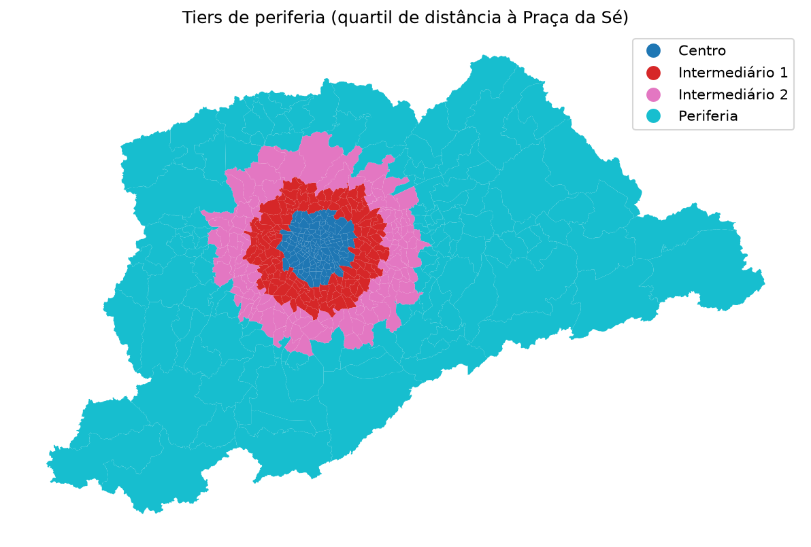
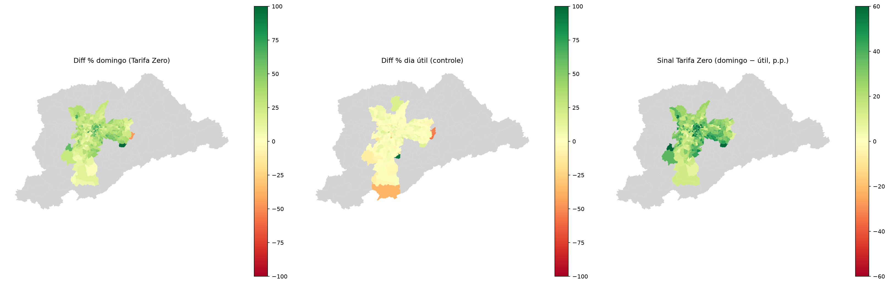
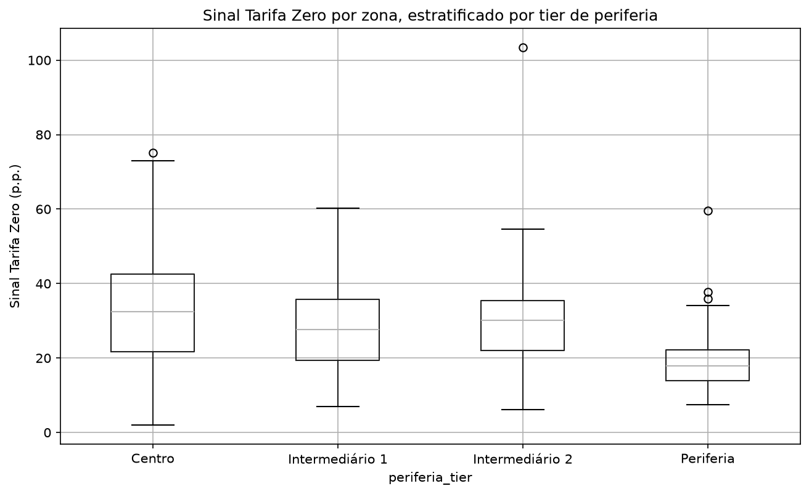
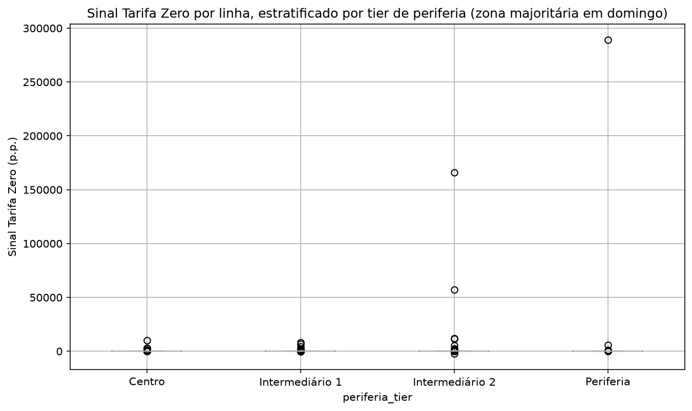
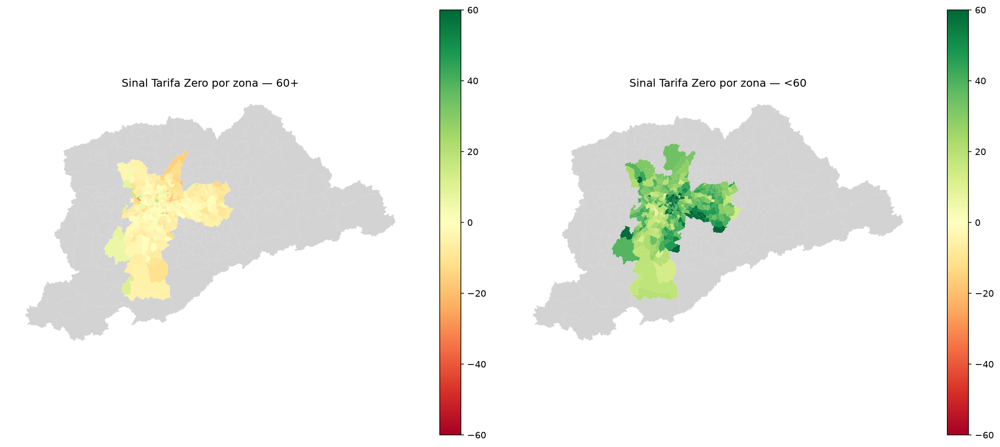
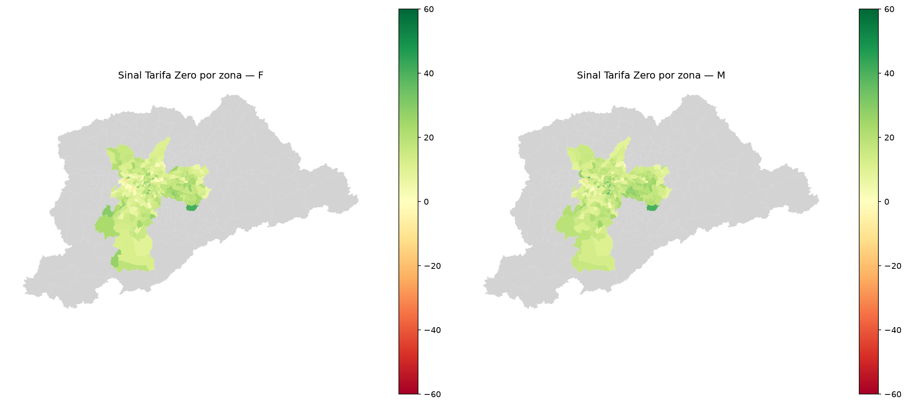
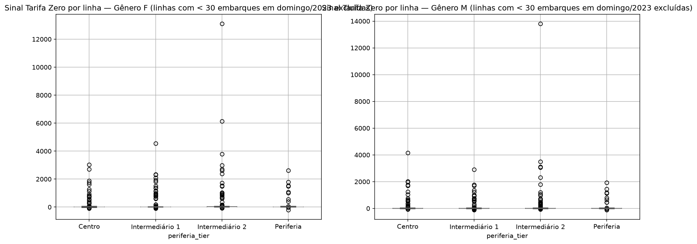
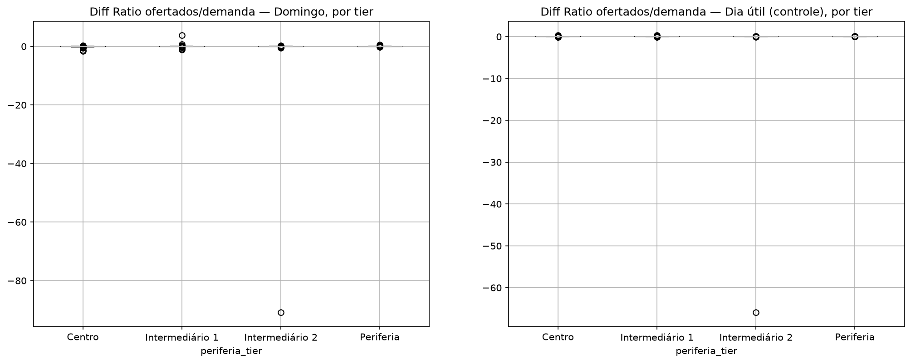

1. Resumo
Em 2024 a Prefeitura de São Paulo passou a não cobrar tarifa nos ônibus municipais aos domingos. Este estudo mede quanto da variação de demanda entre 2023 e 2024 pode ser atribuído à política, usando o dia útil como controle: se a demanda de domingo cresceu muito mais que a de dia útil, a diferença isola o efeito da gratuidade do crescimento geral do sistema.
A métrica central, usada em todo o relatório, é o Sinal Tarifa Zero = variação percentual da demanda de domingo (2024 vs. 2023) menos a mesma variação no dia útil, em pontos percentuais (p.p.).
Os três números vêm da série oficial de passageiros transportados da Prefeitura/SPTrans — a única fonte deste estudo que é publicamente auditável (ver seção 5). São médias por dia, dentro dos meses de abril, maio, setembro e outubro de cada ano.
O mesmo efeito medido por duas fontes
Média de passageiros por dia em cada tipo de dia, a variação 2023→2024 e o sinal resultante, pela
série oficial e pela bilhetagem (esta sempre excluindo registros sem linha_blt).
Gerado por 03_comparacoes/compara_demanda_oferta_genero_idade.ipynb, Seção 8.
A amplitude 23,9–28,9 p.p. não é um intervalo de confiança
São duas estimativas pontuais do mesmo efeito, calculadas pelo mesmo procedimento sobre fontes diferentes: a série oficial de passageiros transportados e a bilhetagem. O intervalo é simplesmente o menor e o maior dos dois valores.
Nenhuma variância amostral é calculada: as duas são agregações censitárias — todos os embarques do período, não uma amostra — de modo que erro-padrão e intervalo de confiança não estão definidos aqui. A amplitude mede divergência entre critérios de contagem, não margem de erro estatística. As duas concordam no sinal e na ordem de grandeza; divergem na magnitude.
Regra editorial deste relatório
Níveis pela série oficial; desagregação (zona, gênero, idade) pela bilhetagem. O número de manchete é +28,9 p.p., da fonte auditável. Os recortes internos — onde o efeito acontece e sobre quem — só existem na bilhetagem, que subestima levemente o crescimento de domingo. Por isso as seções seguintes leem padrões e contrastes relativos, não níveis absolutos.
2. Onde o efeito aparece no território
Cada zona da Pesquisa Origem-Destino 2023 foi classificada em um tier pela distância do seu centroide à Praça da Sé, em quartis: Centro, Intermediário 1, Intermediário 2 e Periferia.

Número de zonas e distância média ao centro, por tier.
O sinal por zona de embarque

Sinal Tarifa Zero por zona, agregado por tier (p.p.).

O efeito é positivo em todos os tiers, mas o gradiente é decrescente do centro para a periferia: a mediana cai de cerca de 30 p.p. no Centro para cerca de 18 p.p. na Periferia. A leitura mais direta é que a gratuidade dominical estimulou sobretudo deslocamentos com destino às áreas centrais.
Verificação: a mesma conta na unidade observada
A zona de embarque no domingo é uma variável imputada (ver metodologia), enquanto a linha de ônibus é observada diretamente. Por isso o mesmo sinal é recalculado tendo a linha como unidade, classificada pelo tier da sua zona de embarque predominante.

Mediana do sinal por tier nas duas unidades de análise. A divergência máxima entre elas é de poucos pontos percentuais e o gradiente centro→periferia se mantém — as duas contam a mesma história.
3. Quem responde à política
Idade: o contraste mais forte do estudo
Demanda e sinal por faixa etária agregada (60 anos ou mais × menos de 60).

Mediana do sinal por tier, em cada grupo etário (p.p.).
O resultado é internamente consistente com a política. Pessoas com 60 anos ou mais já tinham gratuidade antes da Tarifa Zero — para elas o domingo de 2024 não mudou de preço, e o sinal é próximo de zero ou negativo. Praticamente todo o efeito vem do grupo com menos de 60 anos, exatamente o que passou a não pagar. Esse contraste funciona como um teste de placebo: se o sinal aparecesse igualmente nos dois grupos, ele estaria capturando alguma outra coisa.
Gênero: sem diferença relevante
Demanda e sinal por gênero. Cerca de 4% dos embarques não têm gênero identificado e ficam de fora desta tabela — não constituem uma terceira categoria.

Mediana do sinal por tier, em cada gênero (p.p.).

Homens e mulheres respondem praticamente da mesma forma, e o gradiente territorial se repete nos dois. Não há aqui evidência de efeito diferenciado por gênero.
4. A oferta acompanhou?
Se a demanda de domingo cresceu perto de 30 p.p. acima do controle, a pergunta seguinte é se a oferta de lugares cresceu junto. A resposta é medida pela razão entre capacidade ofertada e embarques, comparada entre 2023 e 2024.
Como a capacidade ofertada é calculada
-
Tecnologias.csvinforma a frota por linha, mês e tecnologia (Miniônibus, Micro Ônibus, Midiônibus, Básico, Padron, Articulado…). - Cada tecnologia recebe uma capacidade nominal de uma tabela de referência (Miniônibus 40, Micro Ônibus 30, Midiônibus 60, Midiônibus Rural 55, Básico 80, Padron 95, Articulado 150 lugares).
-
Daí sai a capacidade média por veículo de cada linha em cada mês:
Σ(frota × capacidade nominal) / Σ frota. -
Partidas.csvinforma o número de partidas programadas por linha, mês e tipo de dia — e este cobre domingo, sábado e dia útil. - Capacidade ofertada = partidas × capacidade média por veículo. Como a frota é o conjunto físico de veículos da linha, ela não muda por ser domingo; o que muda entre tipos de dia é a frequência, e essa vem do passo 4. A capacidade dominical é portanto inferida, não suposta.
- Razão = capacidade ofertada ÷ embarques, calculada por linha. Não por zona: a correspondência entre o identificador de linha da bilhetagem e o da base de oferta cobre 73,2% do volume, abaixo do limiar de 90% adotado, então a alocação espacial de oferta para zonas não é executada.
- O que se publica é a diferença 2024 − 2023 dessa razão, agregada pela mediana dentro de cada tier.

Mediana da variação da razão oferta/demanda, por tier e tipo de dia.
O padrão é claro e vai na direção oposta entre os tipos de dia: no domingo a razão lugares por embarque piora na maior parte dos tiers, enquanto no dia útil ela melhora em todos. Ou seja, a demanda dominical cresceu mais rápido que a oferta correspondente — o sistema absorveu o aumento sobretudo por maior ocupação dos veículos, não por ampliação proporcional do serviço.
Três ressalvas sobre esta seção
- A tabela de capacidade nominal por tecnologia é uma aproximação a partir de dado público, não um valor oficial certificado. Por isso nenhum número absoluto de lugares é publicado aqui — apenas diferenças ano a ano, em que um erro constante de escala se cancela.
- A capacidade média por veículo é a média do conjunto cadastrado da linha, não da fração dele que efetivamente circula no domingo. Em linha de frota homogênea o desvio é nulo, mas essa não é a maioria dos casos: 72% das linhas — e 83% do volume de demanda — rodam com mais de uma tecnologia de veículo, então a exposição é ampla, não um detalhe de borda. O que limita o dano é a escala do desvio dentro dessas linhas: a diferença entre o maior e o menor veículo do conjunto é, na mediana, de apenas 1,33× — a maior parte da mistura é entre categorias de tamanho parecido (ex. Básico e Padron), não entre miniônibus e articulado. E o viés, seja qual for seu tamanho, tende a se repetir em 2023 e 2024 e por isso se cancelar na diferença entre anos, que é o número publicado.
- A análise é por linha, não por zona, pelo motivo explicado no passo 6 acima.
Quanto da demanda circula em linhas com mais de uma tecnologia de veículo, e qual a dispersão de capacidade dentro dessas linhas — a medida direta da exposição à ressalva anterior.
5. A base é confiável?
Os dados de bilhetagem usados nas seções 2 a 4 vieram de pedidos de acesso à informação e não são públicos — não há como um terceiro conferi-los diretamente. Por isso toda a análise é validada contra uma fonte publicada e independente.
Fonte de validação: Demonstrativo diário de passageiros transportados por linha de ônibus, por modalidade de pagamento — Prefeitura de São Paulo / SPTrans, Acesso à Informação.
prefeitura.sp.gov.br/mobilidade/w/institucional/sptrans/acesso_a_informacao/152416
Foram baixados e compilados os 731 dias de 2023 e 2024, um arquivo por dia,
totalizando 989.311 registros por dia × linha × modalidade de pagamento, sem lacunas.
Reprodução em 01_criacao_de_bases/03_cria_base_oficial.ipynb.
Validação linha a linha
Comparar apenas os totais da cidade é um teste fraco: erros de sinais opostos se cancelam. O teste forte é confrontar cada linha de ônibus individualmente contra o valor oficial do mesmo ano e tipo de dia.
Distribuição da razão bilhetagem ÷ oficial, por ano e tipo de dia. Mediana próxima de 1 indica concordância.
96,8% das linhas e 93,3% do volume oficial ficam dentro de ±10% do valor publicado. Os desvios remanescentes não são ruído difuso: concentram-se num conjunto pequeno, estável e identificável de linhas que divergem nos dois anos, o que aponta para diferença de contabilidade e não para erro de medição.
Linhas de maior volume com maior divergência frente ao oficial. As que aparecem em 2023 e em 2024 são as que merecem investigação de contabilidade.
O sinal é consistente mês a mês?
O sinal agregado da bilhetagem (+23,9 p.p., excluindo linha_blt nula) fica abaixo do
oficial (+28,9 p.p.) porque a razão bilhetagem/oficial não é estável entre 2023 e 2024 — desliza
de cerca de 1,05 para cerca de 0,99. Decompondo por mês, essa deriva não está distribuída
igualmente: abril concentra a maior parte da divergência. Nos outros três meses
os dois sinais ficam próximos (diferença de 3 a 4 p.p.); em abril a diferença passa de 11 p.p.
Média de passageiros por dia, oficial × bilhetagem (excluindo linha_blt nula), por
mês-ano — e a diferença percentual entre as duas fontes em cada célula.
Sinal Tarifa Zero (2024 vs. 2023) calculado mês a mês, pela série oficial e pela bilhetagem sem linha nula. Outubro é o mês onde as duas fontes mais concordam; abril é onde mais divergem.
6. Ressalvas
Cinco limitações valem para qualquer leitura deste relatório. A versão detalhada está na página de metodologia.
- A capacidade nominal por tecnologia é aproximação de dado público, não valor oficial certificado — só diferenças ano a ano são publicáveis.
- A composição de frota é conhecida apenas para dia útil. A capacidade de domingo é inferida da frequência dominical aplicada ao conjunto de veículos da linha; o resíduo está em linhas de frota mista — que são 83% do volume de demanda, não um caso raro — e é quantificado na seção 4.
- A zona de embarque é uma estimativa da própria SPTrans (derivada de GPS, endereço cadastrado e horário da validação), e no domingo é imputada por cima disso — por isso toda leitura por zona anda ao lado da versão por linha.
- A bilhetagem subestima o crescimento de domingo em relação à série oficial: a razão entre as duas escorrega de cerca de 1,05 para cerca de 0,99 entre os anos.
- Cortes simultâneos de zona × gênero × idade × tipo de dia ficam esparsos — daí a supressão de zonas com base pequena nos mapas e a prioridade aos agregados por tier.